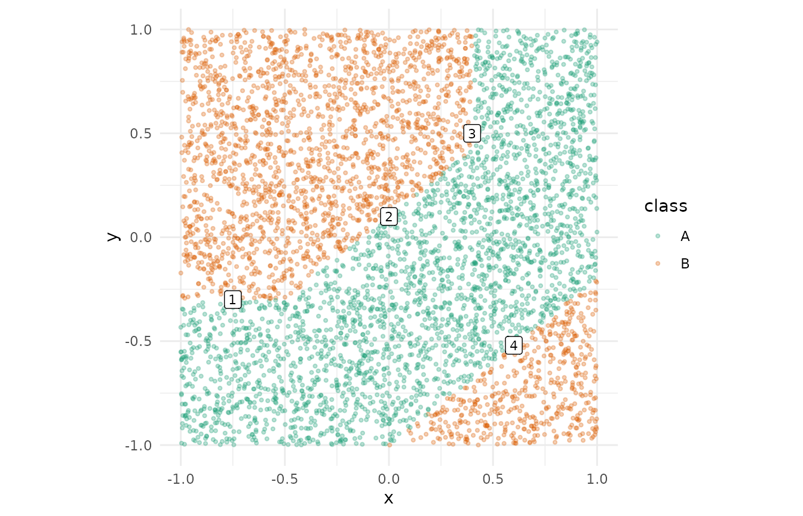
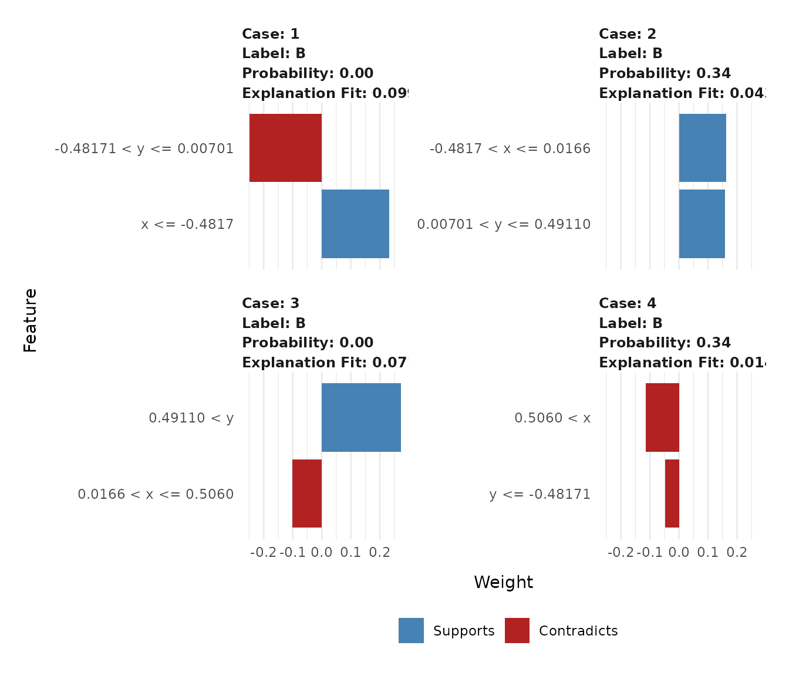
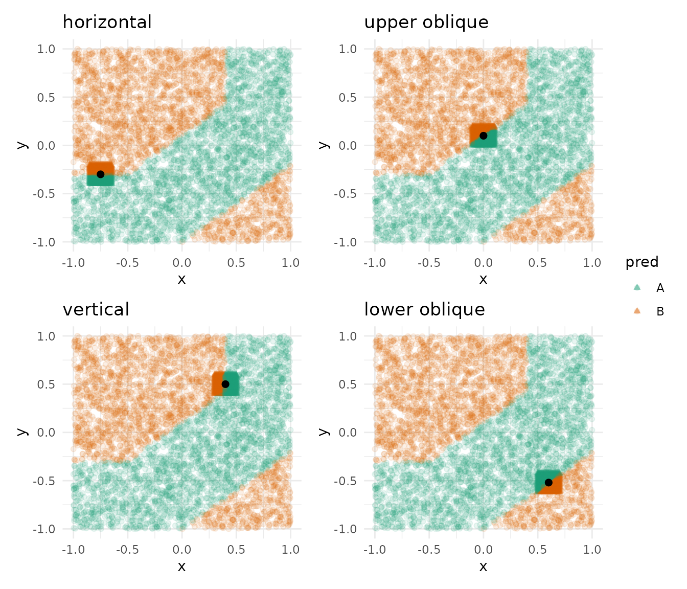
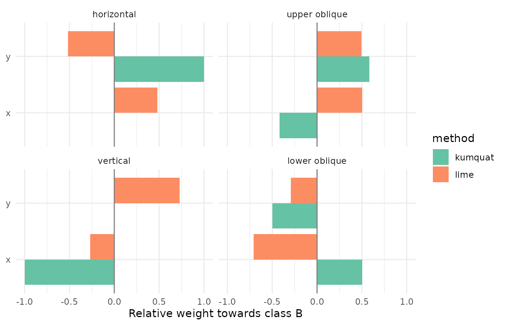

This vignette explains the same black-box model at the same points with both ‘lime’ and ‘kumquat’, so you can see how the two approaches differ.
library(kumquat)
library(lime)
library(caret)
library(ggplot2)
library(patchwork)
# kumquat logs one line per point of interest; keep the output quiet
logger::log_threshold(logger::WARN)
set.seed(2026)Data and model
d_multitwo has two predictors (x,
y) and a binary class (A, B). The
class boundary is made of four pieces: a horizontal edge, two oblique
edges and a vertical edge. That gives us a different local behaviour
depending on where we look.
We fit a random forest through ‘caret’ so that the same model object can be passed to both ‘lime’ and ‘kumquat’.
data(d_multitwo)
train_x <- as.data.frame(d_multitwo[, c("x", "y")])
model <- train(
x = train_x,
y = d_multitwo$class,
method = "rf",
trControl = trainControl(method = "none"),
tuneGrid = data.frame(mtry = 2)
)Points of interest
We place one point of interest on each piece of the boundary. A good
local explanation should report that only y matters on the
horizontal edge, only x on the vertical edge, and both on
the oblique edges.
pois <- data.frame(
boundary = c("horizontal", "upper oblique", "vertical", "lower oblique"),
x = c(-0.75, 0.00, 0.40, 0.60),
y = c(-0.30, 0.10, 0.50, -0.52)
)
pois$poi <- seq_len(nrow(pois))
ggplot(d_multitwo, aes(x = x, y = y, colour = class)) +
geom_point(alpha = 0.3, size = 0.8) +
geom_label(
data = pois,
aes(x = x, y = y, label = poi),
inherit.aes = FALSE,
size = 3
) +
scale_colour_brewer(palette = "Dark2") +
coord_equal() +
theme_minimal()
Explaining with lime
lime() builds an explainer from the training data.
explain() then samples around each point, weights the
samples by proximity and fits a ridge regression. By default ‘lime’ bins
continuous predictors into quartiles, so each feature weight describes
whether the point falls in a particular bin
(e.g. y <= -0.49) and not the effect of a small change
in the value.
We ask for the explanation of class B, so the signs are
comparable with ‘kumquat’ below.
explainer <- lime(train_x, model)
explanation <- explain(
pois[, c("x", "y")],
explainer,
labels = "B",
n_features = 2
)
explanation[, c("case", "feature_desc", "feature_weight", "model_r2")]
#> # A tibble: 8 × 4
#> case feature_desc feature_weight model_r2
#> <chr> <chr> <dbl> <dbl>
#> 1 1 x <= -0.4817 0.232 0.0994
#> 2 1 -0.48171 < y <= 0.00701 -0.250 0.0994
#> 3 2 -0.4817 < x <= 0.0166 0.163 0.0432
#> 4 2 0.00701 < y <= 0.49110 0.159 0.0432
#> 5 3 0.0166 < x <= 0.5060 -0.101 0.0712
#> 6 3 0.49110 < y 0.272 0.0712
#> 7 4 0.5060 < x -0.115 0.0136
#> 8 4 y <= -0.48171 -0.0476 0.0136
plot_features(explanation, ncol = 2)
Explaining with kumquat
‘kumquat’ generates a regular grid of perturbations within
radius of each point, labels them with the model and fits
an L1-penalised logistic regression to those labels. The coefficients
are on the original scale of the predictors and describe the log-odds of
the second class (B).
The model has to be bundled, because ‘kumquat’ unbundles it for each point of interest.
ks <- kumquat(
model_bundle = bundle::bundle(model),
data = train_x,
pois = pois[, c("x", "y")],
radius = 0.1,
step = 0.01,
predictor_vars = c("x", "y"),
class_names = levels(d_multitwo$class)
)
kumquat_imps <- pinch_importance(ks)
cbind(pois[, c("poi", "boundary")], kumquat_imps)
#> poi boundary x y
#> 1 1 horizontal 0.00000 1001.3399
#> 2 2 upper oblique -96.98741 135.9254
#> 3 3 vertical -1001.33989 0.0000
#> 4 4 lower oblique 115.34749 -114.3441The lasso drops the irrelevant feature on the horizontal and vertical edges, and on the oblique edges the ratio of the two coefficients is close to the slope of the boundary (0.8). The coefficients are large because, inside such a small neighbourhood, the two classes are almost perfectly separated by a straight line. Their signs and relative sizes matter more than their absolute values.
plot_interest() shows the perturbations coloured by the
local surrogate’s prediction, with the point of interest in black. If
the surrogate is a good local fit, the split in colour follows the
model’s boundary.
wrap_plots(
Map(
\(p, b) p + labs(title = b),
plot_interest(ks),
pois$boundary
),
ncol = 2,
guides = "collect"
)
Side by side
Both methods return a signed weight per feature. The scales are not
comparable (‘lime’ explains a predicted probability while ‘kumquat’
explains log-odds), so we rescale each explanation so that its absolute
weights sum to one. This keeps the relative importance of x
and y and the sign of each one.
lime_long <- data.frame(
poi = as.integer(explanation$case),
feature = explanation$feature,
weight = explanation$feature_weight,
method = "lime"
)
kumquat_long <- data.frame(
poi = rep(pois$poi, each = 2),
feature = rep(c("x", "y"), times = nrow(pois)),
weight = as.vector(t(as.matrix(kumquat_imps[, c("x", "y")]))),
method = "kumquat"
)
compare <- rbind(lime_long, kumquat_long)
compare$weight <- ave(
compare$weight,
compare$poi, compare$method,
FUN = \(w) if (all(w == 0)) w else w / sum(abs(w))
)
compare$boundary <- factor(
pois$boundary[compare$poi],
levels = pois$boundary
)
ggplot(compare, aes(x = weight, y = feature, fill = method)) +
geom_col(position = "dodge") +
geom_vline(xintercept = 0, colour = "grey50") +
facet_wrap(~boundary, ncol = 2) +
scale_fill_brewer(palette = "Set2") +
labs(x = "Relative weight towards class B", y = NULL) +
theme_minimal()
In this example ‘kumquat’ recovers the shape of each piece of the
boundary. ‘lime’ gives weight to both features at every point, and its
signs do not always agree with the local boundary, e.g. on the
horizontal edge, where moving in x does not change the
prediction.
Things to note:
-
Locality. ‘kumquat’ only looks inside a square of
side
2 * radiusaround the point, so its weights reflect the boundary that passes through that square. ‘lime’ samples from the whole training distribution and relies on its kernel to focus on the point. With binned features its weights mostly describe which quartile the point falls in, so they can point in a different direction from the local boundary. -
Interpretation of the weights. A ‘kumquat’
coefficient is the change in log-odds of
Bfor a one-unit change in the predictor near the point. A ‘lime’ weight is the change in the predicted probability ofBassociated with the point being in its bin. -
Tuning. In ‘kumquat’ you set the neighbourhood
directly through
radiusandstep, and you can turn on LIME-style kernel weighting withweighted = TRUE. In ‘lime’ you set it throughkernel_width,n_permutationsand the binning options.